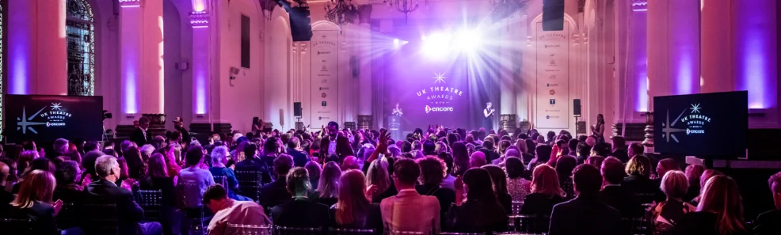

Celebrating Creative Excellence
The nominees for the UK Theatre Awards 2026, sponsored by Encore, have officially been announced. For over 30 years, this annual event has celebrated the creative excellence and outstanding achievements seen on and off stage across England, Scotland, Wales, and Northern Ireland.
This year’s ceremony is set to take place on Monday 12 October at 8 Northumberland Avenue, hosted by the fabulous La Voix. With nominees representing all four nations, the shortlist showcases an incredible range and quality of theatre seen over the past year.
Our Top BTMC Midlands Picks
We are always championing our incredible regional venues here at Behind the Magic Curtain, and we are absolutely thrilled to see two of our absolute favourites from this past year receive well-deserved nominations!
Sweeney Todd The Demon Barber Of Fleet Street (Birmingham Rep) Nominated for Best Musical Production, this thrilling and bloody revival at the Birmingham Rep completely blew us away. It is a bold, visually striking, and intensely atmospheric production. While it naturally carries a Mature Themes badge, the creative execution and sheer spectacle make it a thoroughly worthy contender.
No Such Thing As Wolves (Birmingham Hippodrome) On the completely opposite end of the theatrical spectrum, the brilliantly light and whimsical No Such Thing As Wolves has been nominated for Best Show for Children & Young People. Presented as part of the Hippodrome's brilliant 'My First Musical' series, this production captured our family's hearts with its gentle storytelling, thoughtful Sensory Notes awareness, and completely infectious songs!
The 2026 UK Theatre Awards Full Nominations List
The Ceremony:
Date: Monday 12 October 2026
Venue: 8 Northumberland Avenue, London
Host: La Voix
On Stage Awards:
Best Musical Production: Calendar Girls The Musical, The High Life, Kiss Of The Spiderwoman, Sweeney Todd The Demon Barber Of Fleet Street
Best New Play: Black Sheep, The Last Stand Of Mrs. Mary Whitehouse, The Manningtree Witches
Best Play Revival: Our Town, Road, Small Island
Best Director: Abigail Graham (Living), Emma Jordan (The Human Voice), Tom Littler (Love’s Labour’s Lost & Much Ado About Nothing)
Best Performance in a Musical: Hadley Fraser (My Fair Lady), Annette McLaughlin (Follies), Julianne Pundan (Miss Saigon)
Best Performance in a Play: Isis Hainsworth (Measure For Measure), Adrian Lester (Cyrano De Bergerac), Katie Redford & Benedict Salter (Scenes From A Friendship)
Best Supporting Performance: Ash Hunter (The Meat Kings! (Inc.) Of Brooklyn Heights), Lydia Louise (Chitty Chitty Bang Bang), Gloria Obianyo (As You Like It)
Best Design: Jenny Booth, Garry Boyle, Daniel Hughes & Emma Jones (The Singer); Ceci Calf (The Assassination Of Margaret Thatcher); Terry Parsons (Jack And Sarah)
Best Show for Children & Young People: Beauty And The Beast, No Such Thing As Wolves, Treasure Island
Achievement in Dance: National Dance Company Wales, Scottish Ballet, Yorke Dance Project
Achievement in Opera: English Touring Opera, Jack Furness, Scottish Opera
Off Stage Awards:
Excellence in Arts Education: Buxton Opera House, Curve, Polka Theatre
Excellence in Touring: East Anglian Touring Consortium, Northern Ballet, Theatr Clwyd
Excellence in Inclusivity: National Youth Theatre, Northern Stage, The Theatre Chipping Norton
Excellence in Sustainability: Mercury Theatre, The Old Vic, Theatr Clwyd
Excellence in Workforce Culture: Blackpool Grand Theatre, Swindon Theatres, Wales Millennium Centre
UK’s Most Welcoming Theatre: Nottingham Playhouse, Theatr Clwyd, Theatre Royal Bury St Edmunds